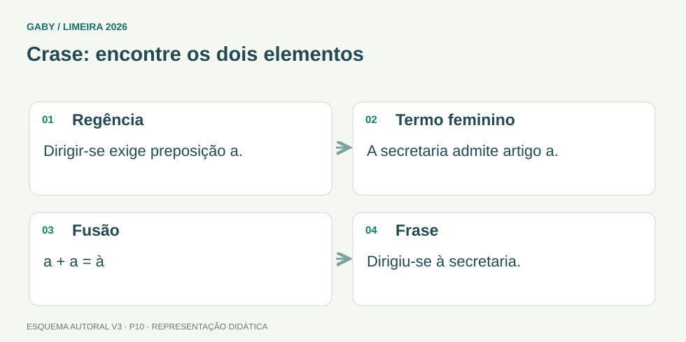

Objetivos do módulo
- Identificar quando há preposição “a” + artigo “a/as”.
- Aplicar testes de substituição por masculino e por “para a”.
- Reconhecer casos obrigatórios, proibidos e facultativos.
- Reconhecer a crase com aquele, aquela, aquilo e com o relativo “a qual/as quais”, e os pronomes que não aceitam artigo.
- Aplicar o teste “volto da/volto de” a nomes de lugar e distinguir “casa”, “terra” e “distância” com e sem especificador.
- Empregar a crase nas horas, nas locuções femininas e em “à moda de”, e evitá-la depois de outras preposições.
- Separar os casos facultativos (possessivo, nome próprio de pessoa, “até”) e saber o que a banca costuma aceitar.
Crase: encontre os dois elementos

Descrição em texto do esquema
- Regência: Dirigir-se exige preposição a.
- Termo feminino: A secretaria admite artigo a.
- Fusão: a + a = à
- Frase: Dirigiu-se à secretaria.
Oficina visual · aplique o esquema
Explique a diferença entre “entregou a ficha” e “entregou a ficha à servidora”.
Atividade autoral complementar da V3. Registre sua resposta; a resolução está no arquivo de gabarito e revisão.
Mapa do conteúdo
1. O que é crase
Crase é a fusão de dois sons/vogais “a”. Na escrita, o acento grave marca essa fusão. O caso mais frequente é preposição “a” exigida pelo termo anterior + artigo feminino “a/as” admitido pelo termo seguinte: “dirigir-se à escola”.
Portanto, não basta haver palavra feminina. É preciso verificar duas condições: regência antes e possibilidade de artigo depois.
Os “a” que podem se fundir com a preposição
O primeiro “a” é sempre a preposição, exigida por um verbo ou nome anterior (o termo regente): ir a, referir-se a, obediência a, favorável a. O segundo “a” pode ser:
- o artigo definido a(s) de uma palavra feminina: “Ele se candidatou à vaga” (candidatar-se a + a vaga);
- o pronome demonstrativo a(s), que equivale a “aquela(s)”: “Esta proposta é parecida à do ano passado” (= àquela do ano passado);
- a vogal inicial de aquele(s), aquela(s), aquilo, ou o “a” do relativo “a qual/as quais” (seção 6).
Quando só existe um dos dois elementos, não há crase: só preposição (“Começou a chover”; “Falou a ela”) ou só artigo (“Li a carta”).
| Frase | Preposição “a”? | Artigo ou pronome com “a”? | Resultado |
|---|---|---|---|
| Assisti à palestra. | sim (assistir a, no sentido de ver) | sim (a palestra) | à |
| Encerrei a palestra. | não (encerrar algo) | sim | a (só artigo) |
| Voltou a estudar. | sim | não (verbo) | a (só preposição) |
| Assisti às palestras. | sim | sim, no plural (as) | às |
Atenção ao número: “à” é preposição + artigo no singular; “às” é preposição + artigo no plural. O artigo concorda com a palavra que vem depois.
2. Teste do masculino
Troque o termo feminino por masculino equivalente. Se surgir “ao”, há forte indicação de crase: “fui à escola” → “fui ao colégio”. Se ficar apenas “a”, não há crase: “entreguei a ela” → não existe “ao ele”.
Como aplicar o teste do masculino
Troque só a palavra feminina por uma masculina da mesma classe e mantenha o resto da frase:
- “Pediu um parecer ___ diretora.” → “pediu um parecer ao diretor”: deu “ao”, então “à diretora”.
- “Vendemos ___ empresa.” → “vendemos o imóvel”: deu só “o” (artigo), então “a empresa”, sem acento.
- “Refiro-me ___ esta situação.” → “refiro-me a este caso”: deu só “a”, então “a esta”, sem acento.
Teste do “para a”
Com verbos de movimento ou destino, troque o “a” por “para”. Se aparecer “para a”, há crase; se aparecer só “para”, não há.
- “Levou os documentos ___ tesouraria.” → “para a tesouraria” → “à tesouraria”.
- “Mandou um aviso ___ todos.” → “para todos” → “a todos”.
- “Irá ___ Curitiba.” → “para Curitiba” → “a Curitiba”.
Teste do “voltar de” para nomes de lugar
Nome de lugar não tem masculino equivalente. Use o verbo “voltar de” (ou “vir de”): se der “volto da”, há crase; se der “volto de”, não há. Detalhes na seção 9.
3. Casos comuns de crase
- Antes de locuções femininas: à tarde, à medida que, às vezes.
- Antes de nome feminino que admite artigo e é regido por “a”.
- Com horas determinadas: às 8h, à uma hora.
- Com demonstrativos aquele(s), aquela(s), aquilo, quando houver preposição: referi-me àquele processo.
Cada caso é detalhado nas seções 6 a 9.
4. Casos sem crase
- Antes de palavra masculina: a prazo, a pé.
- Antes de verbo: a partir, a estudar.
- Antes de pronomes pessoais: a ela, a mim.
- Em expressões com palavras repetidas: cara a cara.
- Quando existe apenas artigo ou apenas preposição.
Casos proibidos: tabela de revisão
| Caso | Regra | Exemplo correto | Erro comum |
|---|---|---|---|
| Palavra masculina | não há artigo feminino; vale também para locuções masculinas (a respeito de, a fim de, a par de, a sangue-frio) | Andou a cavalo. Pediu ajuda a um colega. | à cavalo |
| Verbo no infinitivo | verbo não recebe artigo | Passou a cobrar multa. | passou à cobrar |
| Palavras repetidas | entre termos repetidos há só preposição, mesmo que sejam femininos | Leu o contrato linha a linha. | linha à linha |
| “a” singular antes de plural | o “a” sozinho é só preposição; com artigo seria “às” | Não responde a mensagens anônimas. | à mensagens |
| Artigo indefinido “uma” | “uma” não aceita artigo antes de si | Fez um pedido a uma vizinha. | à uma vizinha |
| Pronomes que rejeitam artigo | pessoais, de tratamento, indefinidos, “esta/essa”, “que”, “quem”, “cuja” (seção 6) | Devolvi a caneta a esta aluna. | à esta aluna |
| Depois de outra preposição | desde, entre, para, após, perante já introduzem o termo (seção 8) | Ficou aberto após as 22h. | após às 22h |
| Nome de lugar sem artigo | teste “volto de” (seção 9) | Chegou a Curitiba. | à Curitiba |
Plural em sentido genérico × plural determinado
Quando a palavra feminina no plural tem sentido genérico (quaisquer, sem dizer quais), não há artigo. Fica só a preposição “a”, no singular e sem acento: “O curso é aberto a pessoas de qualquer idade.”
Quando o plural é determinado (um grupo conhecido ou especificado), entra o artigo “as” e a fusão dá “às”: “O curso é aberto às pessoas inscritas no programa municipal.”
- “a” + plural: só preposição, sentido geral. Correto.
- “às” + plural: preposição + artigo, grupo determinado. Correto quando há regência.
- “à” + plural: sempre errado, porque o artigo singular não concorda com a palavra no plural.
Teste do masculino: “aberto a jovens” (genérico) × “aberto aos jovens inscritos” (determinado). Expressões fixas com plural sem artigo também ficam sem acento, como “a duras penas”.
5. Crase e regência
Muitos erros de crase são, na verdade, erros de regência. “Obedecer” exige “a”; “obedecer às normas” tem crase porque “normas” admite artigo. Já “visitar a escola” tem apenas artigo, pois “visitar” é transitivo direto: não há crase.
Verbo transitivo direto: o “a” é só artigo
Verbo transitivo direto liga-se ao complemento (objeto direto) sem preposição. O “a” que aparece é apenas o artigo da palavra feminina, e não há crase:
| Sem preposição (só artigo) | Com preposição “a” (crase) |
|---|---|
| Conheci a cidade. | Fui à cidade. |
| Respeitamos a decisão. | Obedecemos à decisão. |
| Ela admira a Espanha. | Ela viajou à Espanha. |
Mesmo com especificador, o verbo transitivo direto não cria crase: “Conheceu a Curitiba moderna” (conhecer algo). Por isso, comece sempre pela regência: pergunte se o verbo ou nome anterior pede “a”. A regência dos verbos é estudada na aula 08 (Regência Verbal e Nominal).
6. Crase com pronomes
Demonstrativos aquele, aquela, aquilo
Quando o termo regente exige “a” e depois vem aquele(s), aquela(s) ou aquilo, a preposição se funde com o “a” inicial do pronome: àquele, àquela, àquilo. É a única situação em que há crase antes de palavra masculina (aquele) ou neutra (aquilo).
- “Dei preferência àquele candidato.” (dar preferência a + aquele)
- “Ninguém deu atenção àquilo.” (dar atenção a + aquilo)
- “Ele se dirigiu àquela mesa.” (dirigir-se a + aquela)
Teste: troque por “este/isto”. “Refiro-me àquilo” → “refiro-me a isto”: apareceu a preposição, então o acento é necessário. Se o regente não pede “a”, não há acento: “Comprei aquele livro” (comprar algo).
Erros comuns: escrever “à aquele” (a preposição já está no acento) ou omitir o acento quando há regência (“acesso aquele setor”, em vez de “acesso àquele setor”).
O demonstrativo “a” (= aquela) também se funde: “Minha sugestão é igual à da coordenação” (igual àquela da coordenação).
Pronomes relativos: à qual × a que, a quem, a cuja
O relativo “a qual/as quais” traz um artigo. Se o verbo ou nome da oração pede “a”, a preposição se funde com ele: à qual, às quais.
- “Esta é a vaga à qual me candidatei.” (candidatar-se a)
- “As reuniões às quais compareci foram curtas.” (comparecer a)
Teste: troque o antecedente por um masculino. “O cargo ao qual me candidatei” → “a vaga à qual me candidatei”.
Os relativos que, quem e cujo(a) não aceitam artigo antes de si. Mesmo com a preposição exigida, fica só “a”:
- “A lei a que me refiro foi alterada.” (masculino: “o decreto a que me refiro”)
- “A colega a quem entreguei a chave saiu.”
- “A autora a cuja obra o professor se referiu é mineira.”
Pronomes que não aceitam artigo
Antes destas palavras só pode haver a preposição; por isso, não há crase:
| Tipo | Exemplos | Exemplo correto | Erro comum |
|---|---|---|---|
| Pessoais | ela, elas, você, mim, ti | Contei a novidade a você. | à você |
| De tratamento com Vossa/Sua | Vossa Excelência, Vossa Senhoria, Sua Excelência | Solicito a Vossa Excelência o arquivamento. | à Vossa Excelência |
| Indefinidos | toda, qualquer, alguma, cada, ninguém, alguém, todas | O benefício é garantido a qualquer cidadã. Agradeço a todas as voluntárias. | à qualquer; às todas |
| Demonstrativos esta, essa | esta, essa, estas, essas | Dirija o pedido a essa diretoria. | à essa |
| Relativos | que, quem, cujo(a) | A pessoa a quem me refiro. | à quem |
| Artigo indefinido | uma | Recorreu a uma advogada. | à uma advogada |
Em “a todas as voluntárias” o artigo existe, mas vem depois de “todas”; antes de “todas” há só a preposição. O mesmo vale para “a toda a equipe”.
Nas correspondências oficiais, o endereçamento “A Sua Excelência o Senhor…” também não leva acento: a forma de tratamento não aceita artigo.
Senhora, senhorita e dona: as ressalvas
Diferentemente das formas com “Vossa/Sua”, as palavras senhora e senhorita aceitam artigo (“a senhora chegou”). Com preposição, há crase: “Entreguei o recado à senhora.” “Dirijo-me à senhorita.” Teste do masculino: “ao senhor”.
Com dona seguida de nome, a orientação tradicional é não usar crase (“Leve o pacote a dona Cecília”), porque “dona” funciona como forma de tratamento. Há gramáticos que admitem o artigo nesse uso familiar e, com ele, a crase. Na prova: “senhora” e “senhorita” regidas por “a” levam crase; diante de “dona”, a forma sem acento é a mais segura.
7. Locuções femininas e “à moda de”
Locução é um grupo de palavras que funciona como uma só (advérbio, preposição ou conjunção). As locuções formadas com palavra feminina e iniciadas por “a” recebem acento grave, mesmo quando não há um termo regente antes delas. Em algumas, o acento serve sobretudo para dar clareza.
| Tipo | Exemplos | Frase |
|---|---|---|
| Adverbial (circunstância) | às vezes, às claras, às pressas, às cegas, às escondidas, à noite, à tarde, à vontade, à toa, à direita, à esquerda, à risca, à mão, à força, à vista | Vire à esquerda depois da farmácia. Saiu às pressas. |
| Prepositiva (termina em preposição) | à espera de, à custa de, à frente de, à procura de, à beira de, à base de, à margem de, à distância de | Os candidatos ficaram à espera do resultado. |
| Conjuntiva (liga orações) | à medida que, à proporção que | À medida que as inscrições chegam, a lista é atualizada. |
Locuções formadas com palavra masculina não têm acento: a prazo, a pé, a cavalo, a lápis, a tempo, a princípio, a fim de, a respeito de, a par de, a todo vapor.
Locuções terminadas em “a” (em relação a, devido a, junto a, em frente a) seguidas de palavra feminina com artigo produzem crase: “em relação à proposta”, “devido à chuva”.
“À moda de” e “à maneira de” subentendidos
Quando se pode subentender “à moda de” ou “à maneira de”, o acento permanece, mesmo que a palavra seguinte seja masculina ou um adjetivo: “arroz à grega” (à moda grega), “um gol à Pelé” (à maneira de Pelé), “escrever à Machado de Assis”. Teste: se couber “à moda de/à maneira de” sem mudar o sentido, use o acento. Com a palavra “moda” expressa, o acento também é obrigatório: “à moda da casa”.
8. Horas, intervalos, outras preposições e a × há
Horas determinadas
Na indicação de hora exata regida por “a”, há preposição + artigo antes do numeral: “A loja abre às nove.” “O ônibus parte às 6h30.” No singular: “à uma hora”, “à meia-noite”. Teste: troque por “meio-dia”: “ao meio-dia” → “à meia-noite”, “à uma”.
Cuidado com “uma”: só há crase quando indica a hora do relógio. “Chegou à uma hora” (hora exata) × “O sítio fica a uma hora de viagem” (duração, sem artigo) × “Chegou há uma hora” (tempo decorrido).
Depois de outras preposições
Se o termo já é introduzido por outra preposição (desde, entre, para, após, perante, sob, sem, com, contra), a preposição “a” não aparece. Resta só o artigo, sem acento:
- “Estamos atendendo desde as 7h.”
- “O intervalo será entre as 13h e as 14h.”
- “O voo foi remarcado para as 20h.”
- “Ninguém entra após as 18h.”
- “O servidor depôs perante a comissão.”
O mesmo vale para “conforme” e “segundo” usados como preposição: “conforme a escala”, “segundo a portaria”. Erros típicos: “desde às 7h”, “após às 18h”, “para às 20h”. A exceção é “até”, que admite as duas formas (seção 10).
Intervalos: paralelismo entre “de… a” e “das… às”
Nos intervalos de tempo ou de lugar, os dois limites devem ter a mesma estrutura (paralelismo):
- sem artigo nos dois: “de… a” → “O posto atende de segunda a sábado.” “As inscrições vão de 8 a 12 de março.”
- com artigo nos dois: “da(s)… à(s)” → “O plantão vai das 19h às 7h.” “Funciona da manhã à noite.”
Se o primeiro limite tem artigo (das, da), o segundo também tem (às, à). Se o primeiro não tem (de), o segundo também não tem (a). Erros comuns: “de segunda à sexta”, “das 14h a 18h”.
a, à ou há na indicação de tempo
Resumo enxuto (o uso de “há” é estudado na aula 05, Ortografia e Acentuação):
- há = verbo haver, tempo decorrido (passado). Teste: troque por “faz”. “Mudou-se há dois anos” (faz dois anos).
- a = tempo futuro ou distância. “Daqui a dois anos”, “daqui a pouco”, “a três quilômetros daqui”. “Daqui a” nunca leva acento nem vira “há”.
- à/às = hora determinada com preposição. “A prova começa às duas.”
9. Nomes de lugar, casa, terra e distância
Nomes de lugar: teste “volto da/volto de”
Não há regra que diga quais nomes de lugar usam artigo; é convenção. Por isso, use o teste: troque o verbo por “voltar de” (ou “vir de”).
| Frase | Teste | Conclusão |
|---|---|---|
| Viajou ___ Argentina. | voltou da Argentina | à Argentina |
| Chegou ___ França. | veio da França | à França |
| Foi ___ Curitiba. | voltou de Curitiba | a Curitiba |
| Irá ___ Roma. | voltará de Roma | a Roma |
Regra prática: “volto da, crase há; volto de, crase pra quê?”.
Com especificador: o nome que normalmente não tem artigo passa a aceitá-lo quando é caracterizado por um adjetivo ou expressão. Com regência, há crase: “Voltou à Curitiba dos anos 1990.” “Fez uma homenagem à Roma antiga.” Sem regência (verbo transitivo direto), continua sem acento: “Conheceu a Roma antiga.”
Casa
No sentido de lar, a própria residência, e sem especificador, “casa” não tem artigo: “Depois da aula, foi direto a casa” (teste: “voltou de casa”). Com especificador, entra o artigo e há crase: “Foi à casa da madrinha” (teste: “voltou da casa da madrinha”).
Terra
No sentido de terra firme, em oposição a bordo, à água ou ao ar, e sem especificador, “terra” não tem artigo: “Após a travessia, os passageiros voltaram a terra.” Com especificador, ou quando se refere ao planeta, há crase: “Voltou à terra natal.” “A nave retornou à Terra.”
Distância: “a distância” × “à distância de”
Pela regra tradicional, quando a distância não é determinada, não há artigo: “Os alunos acompanham as aulas a distância.” É a forma usada no texto da Lei de Diretrizes e Bases da Educação (Lei 9.394/1996, art. 80: “ensino a distância”). Quando a distância é determinada (há uma medida), usa-se a locução à distância de: “A placa fica à distância de cem metros.”
Divergência: parte dos manuais admite “à distância” mesmo sem determinação, para evitar ambiguidade; o guia de redação oficial do Governo de Goiás, por exemplo, recomenda essa forma nos textos oficiais do estado. Na prova: com medida determinada, use sempre “à distância de”; sem determinação, a forma sem acento segue a regra tradicional e é a mais segura quando a questão pede uma só resposta.
10. Casos facultativos e divergências
A crase é facultativa quando um dos dois elementos é opcional: o artigo (antes de possessivo e de nome próprio de pessoa) ou a preposição (depois de “até”). As duas formas são corretas.
Pronome possessivo feminino
Antes de minha, tua, sua, nossa, vossa seguidos de substantivo feminino singular expresso, o artigo é opcional, e a crase também: “Fiz um elogio a sua equipe” ou “à sua equipe”. Teste: “a seu grupo” e “ao seu grupo” são ambos possíveis.
- Plural: “a suas propostas” (só preposição) ou “às suas propostas” (com artigo). “À suas” é erro.
- Possessivo sem substantivo, retomando um termo anterior: o artigo é exigido e o acento também. “Minha resposta foi igual à sua” (= à sua resposta). Teste: “meu voto foi igual ao seu”.
- Possessivo com palavra masculina: não há crase. “Entregou o convite a seu tio.”
- Formas de tratamento (Sua Excelência, Vossa Senhoria): não há crase, apesar do possessivo.
Nomes próprios femininos de pessoa
O artigo diante de nome de pessoa é opcional (indica familiaridade), por isso a crase é facultativa: “Mandei flores a Beatriz” ou “à Beatriz”. Teste: “a Pedro” e “ao Pedro”.
Ressalvas: diante de nome de personalidade célebre ou de santa, normalmente não se usa artigo, e a forma sem acento é a esperada: “uma homenagem a Cecília Meireles”, “uma prece a Santa Luzia”.
Depois de “até”
A preposição “até” pode vir seguida ou não da preposição “a”. Antes de palavra feminina com artigo, os dois usos são aceitos: “O prazo vai até as 23h59” ou “até às 23h59”; “Caminhou até a esquina” ou “até à esquina”. Teste: “até o portão” e “até ao portão”.
Quando “até” significa “inclusive”, não é preposição e não há crase: “Até a diretora compareceu.”
O que a banca costuma aceitar
| Caso | Formas aceitas | Observação |
|---|---|---|
| Possessivo feminino singular + substantivo | a sua / à sua | sem substantivo expresso, use o acento |
| Nome próprio feminino de pessoa | a Beatriz / à Beatriz | nome célebre ou de santa: sem acento |
| “até” + palavra feminina com artigo | até a / até à; até as / até às | “até” = inclusive: sem acento |
| “dona” + nome | sem acento (orientação tradicional) | com acento só onde se admite o artigo |
| “distância” sem medida | a distância (tradicional) | “à distância” aceito por parte dos manuais |
Em questões do tipo “qual lacuna admite ‘a’ e ‘à’”, procure possessivo feminino singular com substantivo, nome próprio feminino de pessoa ou “até”. Locuções femininas, horas determinadas e casos proibidos não admitem as duas formas.
Exemplos resolvidos passo a passo
Exemplo 1
Situação: “Dirigi-me ___ secretaria.”
Exemplo 2
Situação: “Entreguei o documento ___ ela.”
Exemplo 3
Situação: “A reunião começa ___ 14 horas.”
Exemplo 4
Situação: “Encaminhe o recurso ___ comissão ___ qual o edital se refere.”
Exemplo 5
Situação: “O plantão funciona ___ 22h ___ 6h, ___ sexta ___ domingo.”
Exemplo 6
Situação: “Depois da reunião, voltou ___ casa; à noite, foi ___ casa da irmã.”
Exemplo 7
Situação: Em qual frase as duas formas são aceitas? (I) “Entreguei o relatório ___ minha supervisora.” (II) “Entreguei o relatório ___ ela.” (III) “Entreguei o relatório ___ coordenação do setor.”
Pegadinhas e erros frequentes
- Colocar crase apenas porque a palavra seguinte é feminina.
- Usar crase antes de verbo ou pronome pessoal.
- Não verificar a regência do termo anterior.
- Confundir “visitar a escola” com “ir à escola”.
- Usar “à” antes de palavra no plural: o certo é “a” (sentido genérico) ou “às” (grupo determinado).
- Acentuar depois de desde, entre, para, após ou perante (“desde às 7h”).
- Achar que aquele e aquilo não podem ter crase por não serem femininos.
- Acentuar antes de que, quem e cuja, ou esquecer o acento em “à qual” quando o regente pede “a”.
- Acentuar antes de Vossa Senhoria ou Vossa Excelência e esquecer o acento em “à senhora”.
- Quebrar o paralelismo dos intervalos: “de segunda à sexta”, “das 14h a 18h”.
- Confundir “à uma hora” (hora exata), “a uma hora de viagem” (duração) e “há uma hora” (passado).
- Escrever “daqui à pouco” ou “daqui há pouco”: o certo é “daqui a pouco”.
- Esquecer que “casa” (lar) e “terra” (terra firme) sem especificador não têm artigo, mas com especificador têm.
- Tirar o acento de “à moda de” subentendido só porque a palavra seguinte é masculina (“um gol à Pelé”).
Resumo de prova
- Crase = preposição a + artigo a/as (ou demonstrativo compatível).
- Teste do masculino: se der “ao”, tende a haver crase.
- Não há crase antes de verbo, masculino e pronome pessoal.
- Horas determinadas: às 8h.
- Estude crase junto com regência.
- Àquele, àquela, àquilo: preposição + “a” inicial do pronome.
- À qual/às quais podem ter crase; a que, a quem, a cuja nunca.
- Sem crase: pessoais, Vossa/Sua…, indefinidos, esta/essa, uma. Com crase possível: senhora, senhorita.
- Locuções femininas e “à moda de” levam acento; locuções masculinas não.
- Depois de desde, entre, para, após, perante: só artigo (desde as 7h).
- Intervalos: de… a (sem artigo) ou das… às (com artigo).
- “a” + plural = sentido genérico; “às” + plural = determinado; “à” + plural = erro.
- Nomes de lugar: volto da → à; volto de → a. Com especificador: à Roma antiga.
- Casa (lar) e terra (terra firme) sem especificador: sem crase.
- Facultativos: possessivo feminino singular, nome próprio de pessoa, “até”.
- há = passado (faz); daqui a = futuro, sem acento.
Exercícios do módulo
Resolva sem consultar o arquivo de gabarito. As questões são autorais e construídas para treinar os conceitos do edital.
- Dirigi-me a escola.
- Dirigi-me à escola.
- Dirigi-me á escola.
- Dirigi-me há escola.
- pronome pessoal não admite artigo nesse uso
- o verbo é impessoal
- sempre é proibida após documento
- ela é masculina
- Cheguei há uma hora no sentido futuro.
- Cheguei á uma hora.
- Cheguei à uma hora.
- Cheguei a uma hora.
- à medida que
- à tarde
- às vezes
- a partir de
- fui a colégio
- fui ao colégio
- fui do colégio
- fui pelo colégio
- Andou a pé.
- Andou á pé.
- Andou há pé.
- Andou à pé.
- regras é verbo
- é expressão fixa sem regência
- obedecer é direto
- há preposição a + artigo as
- tempo verbal
- verbo visitar não exigir preposição a
- escola não admitir artigo
- palavra feminina nunca ter crase
- Referi-me aquele processo.
- Referi-me àquele processo.
- Referi-me háquele processo.
- Referi-me áquele processo.
- sem crase
- crase facultativa sempre
- dois acentos graves
- crase obrigatória
Quando terminar, abra Português 10 - Crase - Gabarito e Revisão.
Checklist de domínio
- ☐ Identificar quando há preposição “a” + artigo “a/as”.
- ☐ Aplicar testes de substituição por masculino e por “para a”.
- ☐ Reconhecer casos obrigatórios, proibidos e facultativos.
- ☐ Usar àquele, àquela, àquilo e à qual quando o regente pede “a”.
- ☐ Listar os pronomes que não aceitam artigo e a ressalva de senhora, senhorita e dona.
- ☐ Aplicar a crase às horas e às locuções femininas, inclusive “à moda de” subentendido.
- ☐ Evitar a crase depois de outras preposições e manter o paralelismo dos intervalos.
- ☐ Aplicar o teste “volto da/volto de” e resolver casa, terra e distância.
- ☐ Identificar os casos facultativos e o que a banca aceita.
- ☐ Distinguir a, à e há na indicação de tempo.
Meta do módulo: 80% ou mais nas questões, sem depender de consulta.
Referências e conteúdos auxiliares
- Presidência da República — Manual de Redação, 3ª ediçãoClareza, redação oficial, concordância, regência e pontuação. Referência de apoio; modelos locais podem ter regras próprias.
- Academia Brasileira de Letras — VOLPConsulta de grafia e classe gramatical. O vocabulário não é um dicionário de significados.
- Senado Federal — Manual de Comunicação da Secom: CraseConferidos: definição (preposição + artigo ou demonstrativo), crase com aquele e aquilo, “à moda/à maneira” subentendida, locuções femininas, testes da troca por masculino e por “para”, nome de lugar com modificador, casos sem crase (verbo, masculino, indefinidos, pronomes pessoais e de tratamento, relativos que, quem e cuja) e casos facultativos (possessivo, nome próprio feminino). Conferido em 18/11/2026.
- Governo de Goiás, Secretaria da Casa Civil — Guia para o uso do acento grave (indicador de crase)Conferidos: teste do “para a”, demonstrativos, locuções adverbiais, prepositivas e conjuntivas, intervalos de dias e de horas, indefinidos e “uma”, palavras repetidas, “daqui a”, substantivos de sentido genérico, formas de tratamento e “A Sua Excelência”, casos facultativos (possessivo, “até”, nomes próprios), “terra”, “casa” e a recomendação de “à distância” na redação oficial do estado. Conferido em 18/11/2026.
- UFMT — Aspectos da norma culta da língua portuguesa (2021), Unidade 2Conferidos: teste do masculino com resultado obrigatório, facultativo ou proibido, plural genérico × determinado, “à qual/às quais” × “a que”, demonstrativos, locuções femininas e masculinas, palavras repetidas e teste do “vir de” para nomes de lugar. Conferido em 18/11/2026.
- Câmara dos Deputados — Agência Câmara: Conheça as regras da crase (2005)Conferidos: horas (às sete horas, à meia-noite), “à moda de”, locuções, “casa” sem adjunto, “terra” no sentido de terra firme, “Dona”, nomes célebres e de santos, casos facultativos (nomes próprios, possessivos, “até”). Conferido em 18/11/2026.
- Planalto — Lei 9.394/1996 (LDB), art. 80Conferida a grafia “ensino a distância”, sem acento grave, no texto legal. Conferido em 18/11/2026.
Referências externas de apoio consultadas para a V3 em 27/09/2026. A origem das questões é o material autoral do projeto; estes links não indicam que uma instituição publicou ou validou os exercícios. As páginas externas precisam de internet. Em informática, confira a versão do programa; em legislação, observe o recorte e as regras de atualização do edital.